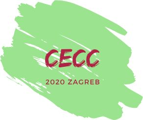

CECC 202020th Central European Conference on CryptologyJune 24 - 26, 2020, Zagreb, CroatiaOrganized by QuantiXLie Center of Excellence
and
|
 |
Program Committee:
|
|
Local Organizing Committee:
|
| Tuesday, June 23 | Wednesday, June 24 | Thursday, June 25 | Friday, June 26 |
|
17:30 - 19:00 Welcome party and Registration Hotel Westin 17th floor |
9:00 - 9:30 Registration 9:30 - 9:45 Opening and Announcements
9:45 - 10:35 Budaghyan
11:05 - 11:30 coffee break
11:30 - 11:55 Kotukh 12:30 - 14:00 lunch
14:00 - 14:45 Courtois
15:15 - 15:45 coffee break
15:45 - 16:15 Csirmaz |
9:00 - 9:50 Pawlowski 9:55 - 10:10 Vécsi 10:15 - 10:40 Pucher
10:45 - 11:15 coffee break
11:15 - 11:40 Abbondati 12:20 - conference photo 12:30 - 14:00 lunch
14:00 - 15:00 Andreeva
15:35 - 15:55 coffee break
15:55 - 16:15 Dsupin 17:15 - 19:00 city sightseeing 19:00 - conference dinner |
9:00 - 10:00 Mendel 10:05 - 10:25 Klinger 10:30 - 10:55 Banov
11:00 - 11:20 coffee break
11:20 - 11:35 Švec-Ploszek 12:00 - 12:30 rump session and CECC 2021 announcement 12:40 - 14:00 lunch |
Program in pdf: short version, longer version
The aim of the conference is to bring together researchers in all aspects of cryptology, including but not limited to:
Registration fee: 120 EUR (900 kn)
Registration web page at Perfecta Travel agency
Important dates:
Selected papers will be published in the
Conference Proceedings,
as a special issue of the journal
Rad HAZU, Matematičke znanosti.
The journal is published by Croatian Academy of Sciences and Arts.
It is indexed in Scopus, Emerging Sources Citation Index (a part of Web of Science Core Collection),
MathSciNet and Zentralblatt MATH.
Submission deadline for the proceedings is October 31, 2020.
A brief history of The Central European Conference on Cryptology:
Contact: Andrej Dujella (duje@math.hr)